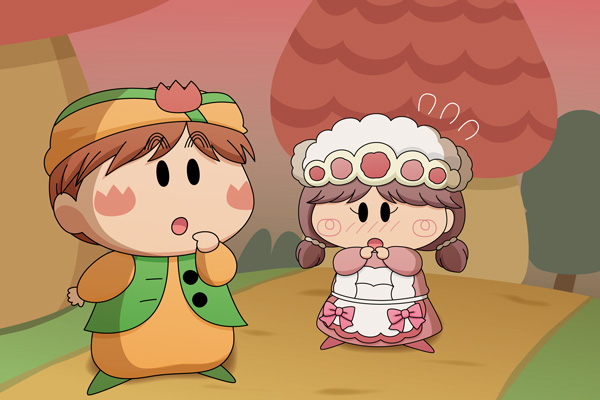

「あのね、マンボくん・・・」
ペータたちと遊んだ帰り道、後ろからマンボを呼び止める声が聞こえました。
マンボ「ソフトちゃん！？
今日はどうしたんだい？」
ソフト「マンボくんって・・・。
クリスマスイブの夜は空いてるぽよ？
私の作ったケーキを食べて欲しくて・・・」
マンボ「う～ん、イブの夜はルンバ姉ちゃんがいつもケーキを作って
くれるから・・・。
次の日じゃだめかな？」
ソフト「そ、そうぽよね。
じゃあ２５日にマンボくんのお家に持って行くぽよ」
マンボ「ありがとう、ソフトちゃん。
もう暗いから気をつけて帰るんだよ」
ソフト「はいぽよ」
ソフトは笑顔で答えました。
その笑顔の裏に淋しさがちょっと含まれていることに、ウブなマンボは気付くことがありませんでした。
久々にマンボとソフトを描きました。アニメ上では全然接点が無かった二人なので、このカップリングはムルモ屋本舗オリジナルの完全フィクションです(^^;。
クリスマスが近づいてくると妖精界でもこういう光景があちこちで見られるわけですが…。今回マンボにはヘタレを演じていただきました。ビケーやペータが見たら「カッコ悪い」ということ間違いなしですね。マンボはどこがカッコ悪いのか分からなそうですけど…。私としては、この２人の関係はゆっくり時間をかけて成長していって欲しいなと思います。
(2010/12/10)